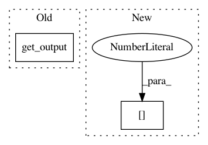

10deb8f267e1d982415a23a8f5c8cc44da4f4671,tests/keras/layers/test_normalization.py,,test_batchnorm_mode_0_convnet,#,34
Before Change
X = np.random.normal(loc=5.0, scale=10.0, size=(1000, 3, 4, 4))
model.fit(X, X, nb_epoch=5, verbose=0)
norm_m0.input = K.variable(X)
out = (norm_m0.get_output(train=True) - K.reshape(norm_m0.beta, (1, 3, 1, 1))) / K.reshape(norm_m0.gamma, (1, 3, 1, 1))
assert_allclose(K.eval(K.mean(out, axis=(0, 2, 3))), 0.0, atol=1e-1)
assert_allclose(K.eval(K.std(out, axis=(0, 2, 3))), 1.0, atol=1e-1)
After Change
out = norm_m0.call(K.variable(X))
out -= K.reshape(norm_m0.beta, (1, 3, 1, 1))
out /= K.reshape(norm_m0.gamma, (1, 3, 1, 1))
np_out = K.function([K.learning_phase()], [out])([1.])[0]
assert_allclose(np.mean(np_out, axis=(0, 2, 3)), 0.0, atol=1e-1)
assert_allclose(np.std(np_out, axis=(0, 2, 3)), 1.0, atol=1e-1)
In pattern: SUPERPATTERN
Frequency: 3
Non-data size: 2
Instances
Project Name: keras-team/keras
Commit Name: 10deb8f267e1d982415a23a8f5c8cc44da4f4671
Time: 2016-04-01
Author: francois.chollet@gmail.com
File Name: tests/keras/layers/test_normalization.py
Class Name:
Method Name: test_batchnorm_mode_0_convnet
Project Name: keras-team/keras
Commit Name: 2ab9f0ef616c6d05124bdf9c81eb542d73f8e5b6
Time: 2015-06-30
Author: francois.chollet@gmail.com
File Name: keras/layers/containers.py
Class Name: Graph
Method Name: get_input
Project Name: keras-team/keras
Commit Name: 10deb8f267e1d982415a23a8f5c8cc44da4f4671
Time: 2016-04-01
Author: francois.chollet@gmail.com
File Name: tests/keras/layers/test_normalization.py
Class Name:
Method Name: test_batchnorm_mode_0